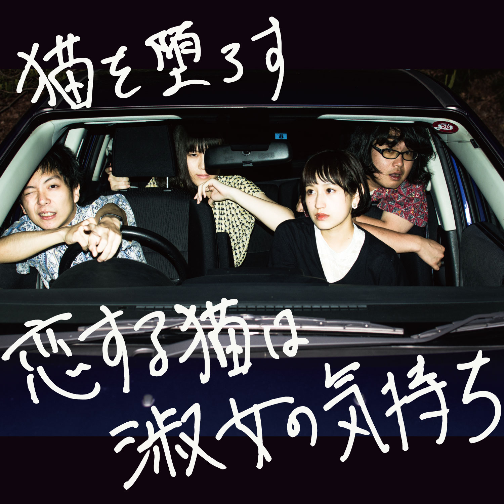
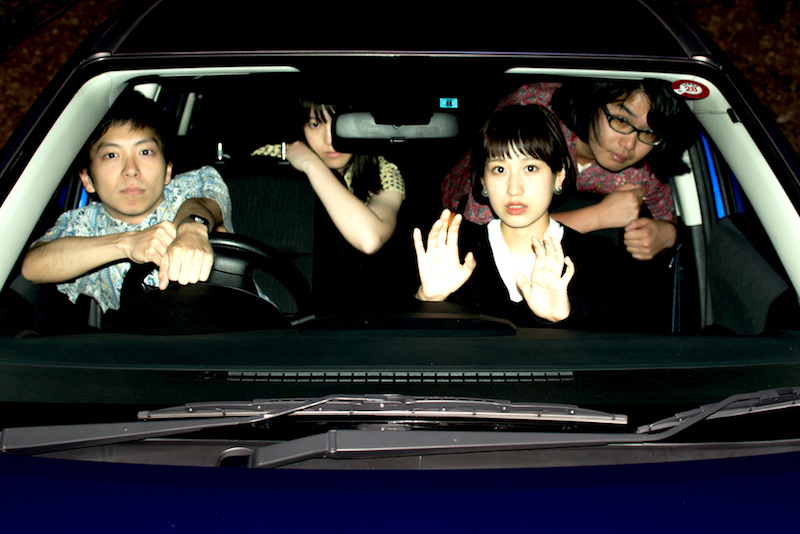

恋する猫は淑女の気持ち
Written by
伊藤薫人(イトウユキト)
Played by 猫を堕ろす
Recorded at Studio 246 Nagoya
Mixing and Mastering by 伊藤薫人
Lettering by トモヒロツジ(
cllctv)
Photo by shiga
New Version 2016/08
Special Thanks
鷲山和希(Suspended 4th)、トモヒロツジ(3cm.rhythm/cllctv)、志賀くん、山本、ヨシミツさん(tor tor toor) 、蒼い芝生、ミヤフジサカヱ(蒼い芝生)、ヒロト(headache)、田口さん(Muscle Soul)、フサコ氏(oasobi)、cafe＆bar drawing、森、Glyn Johns、YMO、エフノジさん、杉岡先生、Apple、過去の俺そして両親、ひさや、ラミクタール、アッシュ、名大フォーク、文明館 ... and you!
Biography

猫を堕ろす
[L→R]
Gt.Vo 伊藤薫人 | Dr たまちゃん | Key.Vo イカリヤマナツ | Ba しーずん
2013年 名大フォークソング同好会にて結成。
名古屋の奇才・イトウユキト率いるシニカル・ポップバンド。 ちょっぴりACIDでキュートでPOP。
2015年 1stミニアルバム「バター猫のパラドクス」をリリース、2016年にはボーカルとしてイカリヤマナツを迎え、精力的に活動を続けている。
Twitter /
公式サイト
Lyrics
「恋する猫は淑女の気持ち」
オシャレは唯 気持ちの足し算
たまには喧嘩をしても引き算
真夜中、海、見に行こうなんて
恋する猫は淑女の気持ち
パッシングライト食らって
助手席で案内
トラベリング聴いて
意味深なんだ案外
どこへ向かうんだ ヘイレディゴー
完璧な感覚が貴方じゃない？
それに惹かれてたって
気持ちを殺さなきゃみっともない
それならそれでエモーション・モーション
* レディにならなくちゃ生きてけない
それが言い訳だったって （にゃーにゃー）
レディにならなくちゃ生きてけない
それならそれでエモーション・モーションね
貴方は完璧じゃないから完璧
私足りないフリ
それがレディ いちばん(ファースト)の条件なの
完璧な感覚が貴方じゃない？
しとやかに襲ってみたい
過激な淑女は時代じゃない
けど それならそれでエモーション・モーション
(* repeat )
エモーション・モーションね！
{kind=link}